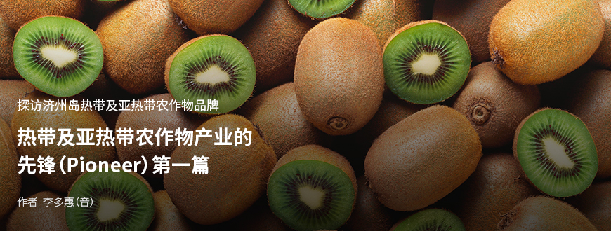
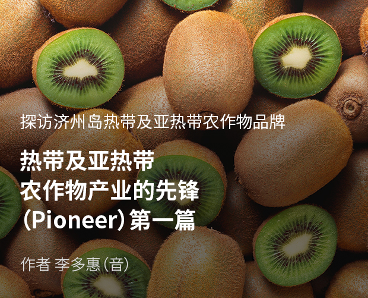
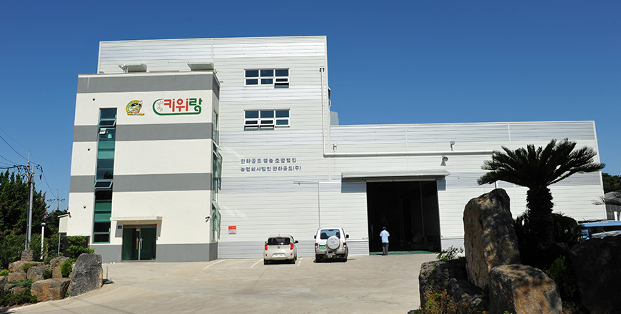
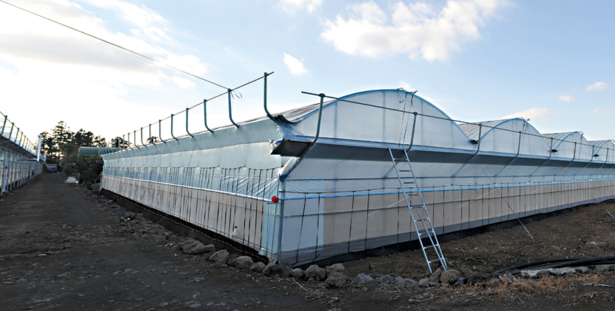

기획취재콘텐츠
- Home
- 제주라이프
- 기획취재콘텐츠
热带及亚热带农作物产业的先锋（Pioneer） 第一篇새로운 글




济州岛热带及亚热带农作物的历史要短于韩国的本土农作物，因此具有更多的挑战性与可能性。正是因为有为了栽培实验性农作物并将其产业化而不断挑战的农户与创新家，济州的热带及亚热带农作物产业才得以实现。遇见以专家的研究、济州岛的扶持为基础，开拓新市场的开拓者——热带及亚热带农作物产业的先锋（Pioneer）。
成为世界顶级猕猴桃品牌——汉拿黄金务农合作社法人
猕猴桃属于猕猴桃科的藤本落叶果树，是在韩国具有高知名度、高消费的代表性亚热带果树。猕猴桃可以在年平均气温14℃以上的地区安全栽培，因此主要是以韩国的南部地区为中心种植。
- ⓒ汉拿黄金务农合作社法人 -
1974年，济州岛开始以部分农户为中心种植猕猴桃。直到1994年，露地栽培一直是主要的栽培方式，但因病虫害和台风灾害，开始转移为设施栽培。2004年，随着与新西兰佳沛公司签订黄金猕猴桃栽培合同及对于韩国产黄金猕猴桃的支援政策等，促使猕猴桃设施栽培的面积增加，在济州岛地区成为了继柑橘之后的第二大代表性果树。2001年到2018年，济州岛猕猴桃的生产面积增加了188%、农户户数增加了237%，2018年创下了311.19亿韩元的毛收入，占据了所有果树总收入490.09亿韩元的64%。猕猴桃能够成为济州岛的第二大代表性果树，是通过品种开发、提高栽培技术能力、农户组织化来提高收益性等多重方面的努力才得以实现的。

- 汉拿黄金务农合作社法人物流中心全貌 ⓒ汉拿黄金务农合作社法人 -
汉拿黄金务农合作社法人成立于2008年，初始成员仅有9名，但目前已经有230多家农户成为了社员。从猕猴桃的种子到成为商品登上消费者餐桌的全过程，汉拿黄金务农合作社法人都与农户形成了共赢结构。汉拿黄金务农合作社法人主要生产的猕猴桃品种为“Jecy Gold”。汉拿黄金和Jecy Gold是由农村振兴厅温室效应应对农业研究所和济州岛农业技术院共同合作，根据韩国的生长环境研发的韩国产猕猴桃品种。合作社于2010年和2014年分别与农村振兴厅签订了汉拿黄金猕猴桃、蜜果黄金猕猴桃品种的独占使用许可，确保了生产及销售权，并且6,600平方米规模的花粉中心于2013年竣工，奠定了可稳定供应雄花粉的基础。由汉拿黄金务农合作社法人向农户供应的花粉每年超过100千克。2017年，汉拿黄金务农合作社法人的花粉全部实现国产化，帮助减轻农户的经营费用。

- 汉拿黄金务农合作社花粉中心全貌 ⓒ汉拿黄金务农合作社法人 -
- 汉拿黄金务农合作社选果厂内部全貌 ⓒ汉拿黄金务农合作社法人 -
为提供高品质的猕猴桃品种，同时扩大农户的生产能力及技术的提高与平均化，正运营着多种项目。例如，提供农户间交流技术信息的机会、实施农户咨询和强化猕猴桃栽培能力的培训等。2012年，合作社成员及管理人员还亲自访问了新西兰，接受当地指导，邀请猕猴桃专家到访韩国主导了农户培训项目。
- 新西兰培训现场 ⓒ汉拿黄金务农合作社法人 -
由汉拿黄金务农合作社最终生产的高品质猕猴桃将全部通过共同筛选和共同出货来进行销售，记账也是以联合账户为原则。汉拿黄金务农合作社为了把直接研发的韩国产猕猴桃品牌“Kiwirang”一贯的高品质猕猴桃送到消费者的餐桌上，构建了自身的甄别及品质管理标准，并制作了国内外出口国残留农药标准表等，发放给了农户。
- Kiwirang(좌), 高档Kiwirang（右）标志 ⓒ汉拿黄金务农合作社法人 -
维持优质的种子，并在生产和流通全过程中努力提高品质与品质平均化的结果是，汉拿黄金务农合作社得到了高品质水果的评价，于2010年获得优秀品种奖、第一农产品展会的铜奖后，2014年被国立农产品品质管理院指定为了农产品优秀管理设施，同年，还获得了济州大学的农产品优秀管理认证。
其优秀性不仅在韩国，在外国市场也获得了认可。以2015年10月向新加坡出口猕猴桃为开端，目前正销往香港、马来西亚、日本等国家和地区。汉拿黄金务农合作社法人在2019年通过购买的猕猴桃创下了总出口148吨、约65亿韩元的业绩，相当于韩国全域猕猴桃出口量的38%、出口额的51%。从向热带及亚热带果树主要产地的东南亚出口猕猴桃并创下高业绩的层面来看，更具有象征意义。
- 汉拿黄金奇异果出口仪式 ⓒ汉拿黄金务农合作社法人 -
为了获得可在外国市场证明济州产猕猴桃的优秀品质，并确保出口竞争力的GLOBAL G.A.P认证，汉拿黄金务农合作社法人专门指派了务农管理队长，为需获得认证的农户提供单独咨询，并以全体农户为对象实施了教育培训。此外，还调查了各国偏爱的猕猴桃品种和包装单位等，积极应用在了产品上。以这些努力为基础，提高出口业绩、强化出口企业能力的汉拿黄金务农合作社法人最终被指定为了新的“2020年出口先导组织培育单位”。
汉拿黄金务农合作社法人计划以农村振兴厅研发的出口战略品种“汉拿蜜果”为武器，进一步扩大国外出口市场，进而敲开除东南亚国家之外的其他国家，包括印度等国外市场的大门，超越新西兰，成长为世界顶级的猕猴桃品牌。
이전글
다음글